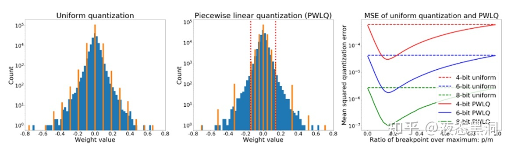
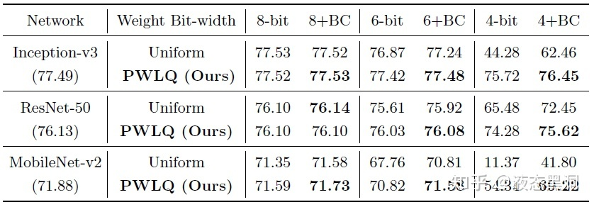

【纯转载】模型量化进展长文综述（三）-映射
这篇我们主要讲模型量化中的projection，也就是映射。这里我们也可以理解为量化函数的选择。量化函数在量化中属于核心问题，量化函数选取的好，那么整个量化过程中的很多步骤都可以省略。而一般我们用的量化函数都是线性量化函数，区别无非是对称或非对称，有无min<0的判断等等，其实很多论文中对自己使用的量化函数细节描述的并不清晰，导致可能实验结果的有效性很难验证，希望后面可以有benchmark性质的论文来规范这个方向的发展。
我们还是先回顾一下目录，然后进入正题。
- 1. DataFree
- 图片复原
- 绕开图片
- 2. GetMaxMin
- 基于统计的方法
- 基于优化的方法
- 基于训练的方法
- ** Projection**
- 1. 通过量化函数映射
- 2. 基于搜索的方法
- 3. 矢量量化
- 4. WeightTransform
- 手动方法
- 基于优化的方法
- 基于训练的方法
- 5. MixPrecision
- 基于优化的算法
- 基于手动搜索的算法
- 基于强化学习的算法
- 基于训练的算法
- 6. 训练过程
- 7. 流程优化
# 3. Projection
Projection是将原始值映射到量化位宽允许的范围内。
# 1. 通过量化函数映射
# （1）线性函数（均匀量化）
将weight或者activation根据得到的maxmin值进行线性映射：
scale=(rmax−rmin)/(qmax−qmin)，z=round(qmax−rmax/scale)
xint=round(x/scale)+z
xq=clamp(xint,qmax,qmin)
这种是最基本的线性映射，我们就不多解释了。那么这种方式非常简单，但为什么还不够好呢？其实如果我们把权重和激活的分布直方图画出来就可以看到，他们的分布都是呈钟形的，而线性函数对这种分布的拟合天然就不是很好，因此才有更多其他的映射函数出现。当然我们可以通过改变权重和激活的分布来让线性函数更好地拟合，不过这是属于下一篇WeightTransform中的内容，我们之后介绍，这里面也有很多有趣的方案。
# （2）非线性函数（NNIE）
i=clamp(−round(ln(−256∗x/∣ data ∣max)∗128/ln(256)),−127,−1),x<=−∣ data ∣max×21/16−9
i=clamp(round(ln(256∗x/∣ data ∣max)∗128/ln(256)),0,127),x>=∣ data ∣max×21/16−9
这种据说是华为的方案，它采用的是log类的映射，具体我个人也没有用过，感觉对硬件不是特别友好，但是优点是对钟形分布拟合好。
# （3）分段函数（Post-Training Piecewise Linear Quantization for Deep Neural Networks (ECCV2020)）
参数分布因为是钟形的，因此具有长尾效应，我们可以找一个breakpoint，分段采用不同量化间隔

分段量化函数：
pw(r;b,m,p)={sign(r)×uni(∣r∣;b−1,0,p,0),sign(r)×uni(∣r∣;b−1,0,m,0),r∈R1r∈R2
其中R1=[−p,p]，R2=[−m,−p)∪(p,m]
量化误差期望为（根据均匀量化的量化误差推导而来）：
E=C(b−1)((m−p)2(F(−p)+1−F(p))+p2(F(p)−F(−p)))=C(b−1)((m−p)2+m(2p−m)(2F(p)−1))
优化目标是找到一个分隔点p，使得E最小。在证明了p存在于(0,m/2)后，通过假设权重服从高斯分布或拉普拉斯分布，使用梯度下降法可以找到p，并且证明了Epw<(9/16)Euni，在实际使用中，对归一化高斯分布使用快速简单的估计
p/m=ln(0.8614m+0.6079)
分段量化在运算时需要两个累乘器三个累加器，权重需要多存储一位，但不会增加额外的乘加运算，从硬件实现考虑，不建议使用超过一个breakpoint 或者对权重和激活都应用PWLQ
实验结果可以表明，相对于均匀量化有明显的提升，尤其是更低比特

# （4）PoT（Additive Powers-of-Two Quantization: A Non-uniform Discretization for Neural Networks(ICLR2020)）
为了权衡参数的非均匀分布和硬件友好，Powers-of Two (PoT) quantization把量化间隔约束到2的次幂：
Qp(α,b)=α×{0,±2−2b−1+1,±2−2b−1+2,…,±2−1,±1}
，α是scale factor，b是位宽
但是PoT存在一个问题，当bit数增加的时候收益会减小，如果将位宽从b增加到b+1，那么间隔[−2−2b−1+1,2−2b−1+1]会被分成2b−1−1个子间隔，然而其他所有的间隔没变。也就是说当增大位宽时只有[−2−2b−1+1,2−2b−1+1]的分辨率会增加，为了解决这个问题，该文提出了Additive Powers-of-Two (APoT) quantization，每个level是n个PoT项的总和：
Qa(α,kn)=γ×{i=0∑n−1pi} where pi∈{0,2i1,2i+n1,…,2i+(2k−2)n1}
其中γ是一个缩放系数来保证最大的level是α，k叫做基准位宽，是每个加法项的位宽，n是加法项的个数，n=b/k，APoT量化中加法项的数量可以随位宽b的增加而增加，这为非均匀level提供了更高的分辨率。
# 2. 基于搜索的方法
# （1）基于训练 Searching for Low-Bit Weights in Quantized Neural Networks - Huawei(NIPS2020)
把任意量化模型的离散权重看成可搜索的变量，优点是不需要估计梯度。对于一个权重，训练时会计算它分配到各个离散值的概率，用加权和作为训练时的权重，推理时选择概率最大的离散值作为量化值，由于这两种权重可能会有差异，因此引入了一种state BN层消除差异。
考虑优化一个n维的size为(d1,...,dn)的离散变量W，其每一个元素ω从m个离散变量V={v1,v2,…,vm}中选择，使用一个辅助tensorA∈Rm×d1×⋯×dn来学习W的分布，根据以下公式计算m个离散变量的概率，
Pi=∑jexpAj/τexpAi/τ,i∈{1,⋯,m}
其中Pi是W中的元素属于第i个离散值vi的概率，τ是控制系统熵的超参。训练时用加权和作为训练时的权重，这样是可微的并且可以end-to-end训练。训练中优化辅助张量，可以准确计算其梯度，从而避免了先前工作中的梯度估计。推理时选择概率最大的离散值作为量化值。
由于训练时和推理时使用的权重会有差异（mean、std不同），引入了一种state BN层消除差异，在训练时计算两组统计特性，yc和yq，分别是使用连续的W和离散的W计算的卷积输出，对它们都进行标准化，标准化都都是mean=0,std=1，然后使用同样的放射参数（相当于BN层的第一步分开做，第二步一起做）。
# （2）基于优化 Towards Accurate Post-training Network Quantization via Bit-Split and Stitching(ICML2020)
将一个整数分成多个bit，然后优化每个bit，最后把所有bit缝合回整数，并提出错误补偿激活量化（ECAQ）方法，可以降低激活的量化误差。
对于Mbit的权重量化，目标是学习一个低比特的核q将输入x映射为输出y，量化的优化问题可以写成：
α,qminimize∥∥∥y−αqTX∥∥∥F2
α是浮点的scale，这个问题很难解，因为q有Mbit的限制，但是q的每个元素的取值是有限的，但是整个q的联合优化空间太大，因此提出了bit-split的算法，将q的Mbit的限制划分为M−1个三值优化问题：
α,{q1,⋯,qM−1}minimize∥∥∥y−α(20q1T+⋯+2M−2qM−1T)X∥∥∥F2, s.t. qm∈{−1,0,+1}(C⋅Kh⋅Kw) for m=1,⋯,M−1
，其中qm是q的第m位。
上式中有M个数需要优化，分别是1个scale和M−1位qm，α的优化在给定q后可以轻易得到：
α=qTXXTqyTXTq
qm的优化，当α固定时，可得到如下优化问题：
qmminimize∥∥∥ym−αmqmTX∥∥∥F2, s.t. qm∈{−1,0,+1}(C⋅Kh⋅Kw)
，其中ym和am独立于qm：
⎩⎪⎪⎨⎪⎪⎧ymαm=y−αi=m∑2m−1qiTX=α2m−2
令A=αm2XXT，s=2αmXym，我们可以最小化下式：
J(qm)=ymTym−2αmymTXTqm+αm2qmTXXTqm=qmTAqm+sTqm+const.
这个二次优化问题很难解，因此采用迭代的方法求解，在固定其余元素的情况下优化qm的每个元素。qm的第k个元素如下：
qm(k)={−sign(rkˉ)0 if rkˉ>Akk otherwise
其中rkˉ=sk+∑i=kAkiqm(i)
之后需要把优化后的所有位缝合回整数：
q′=20q1′+⋯+2M−2qM−1′
对于激活值，使用了一种误差补偿量化方法，不需要额外的计算达到per-channel的效果：把每个输入通道的scale移到相应的2d卷积核上，并且这个操作是在未量化时的浮点权重上做的。
优点：相当于没有用数据，对scale这一步做了调整，并且优化得到clip值，并且量化比特数越少优势越明显
缺点：1).是否过分假设？该方法不仅逐元素优化（假设其他元素确定的前提下优化单一元素），还进行逐比特优化（假设其他比特确定的前提下优化单一比特），假设性非常强，这波贪心搜索非常贪心
2).涉及权重本身微调，是否容易出现过拟合？校准集通常挑的不多，如果有小样本进行校准来微调权重，可能很容易出现过拟合；如果用大样本来微调权重，那为什么不直接做重训练呢
3).优化过程非常缓慢。该优化过程非常复杂，所需时间也很长，远高于常见的post-training方法，据说用开源的代码一个ResNet18的校准过程在V100上要三四个小时（数据来自于csdn某篇文章，找不到链接了..）
# 3. 矢量量化
一般的量化是计算每个点的量化值，称为标量量化，与之对应的是矢量量化。
以全连接层为例，权重W∈RCin×Cout，对于权重W的每列，平均划分为m个子向量，所有的子向量具有相同的维度d=Cin/m，然后对mCout个子向量学习一个码书。然后，W的一列通过映射其每个子向量在码书中的码本来量化。
码书C={c1,…,ck}包括维度为d的k个码本，W的任意一列wj会被映射为它的量化版本q(wj)=(c1,…,ck)，i1表示分配给wj的第一个子向量的码本索引，以此类推。码书可以通过最小化如下目标函数得到：
∥W−W∥22=j∑∥wj−q(wj)∥22
这个目标可以通过k-means优化。当1 < m < Cin时，这种量化方法称为乘积量化（PQ），当m=1时，称为矢量量化（VQ），当m=Cin时，是标量量化。AND THE BIT GOES DOWN: REVISITING THE QUANTIZATION OF NEURAL NETWORKS(ICLR2020) 中将上述目标改为层输出的重建误差，关注保留层的输出信息而不是权重。
PQ的优势在于，wj的每列会被量化为C=C×⋯×C中的一个向量，因此PQ会生成一个size为km的隐式密码本。
这篇文章就介绍到这里，总而言之projection的目的就是找到最能拟合参数分布的量化函数，虽然学术上有这么多的方向，但是实际使用中基本上99%都是用线性量化直接怼，为什么呢？因为简单啊，不需要设计复杂的模块，并且不需要数据finetune，最重要的，在业界用的最多的int8量化下，线性函数看起来已经足够，对于通用的主干网基本都没有精度下降，当然对于部分量化敏感的模型或者更低比特量化，可能还需要更好的量化函数的设计。